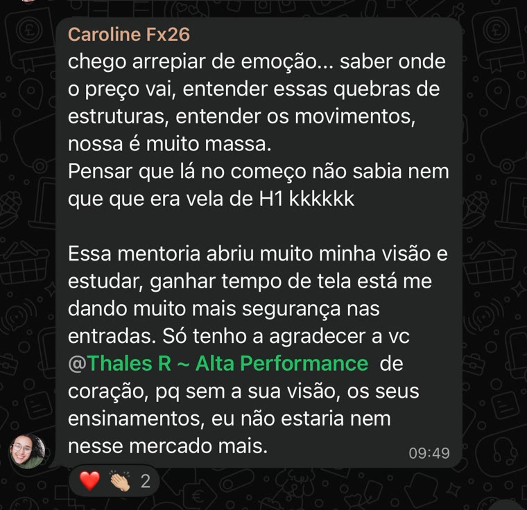
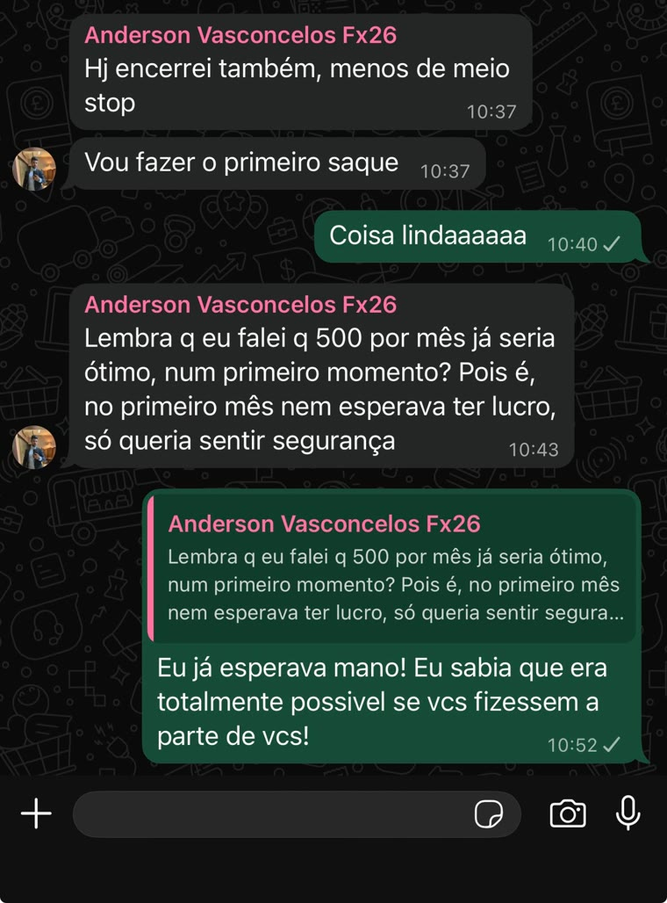
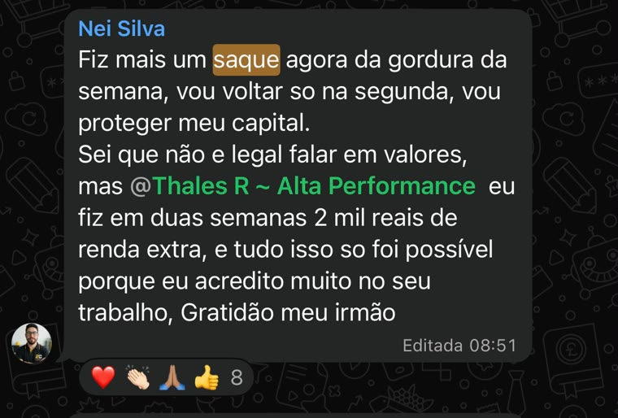
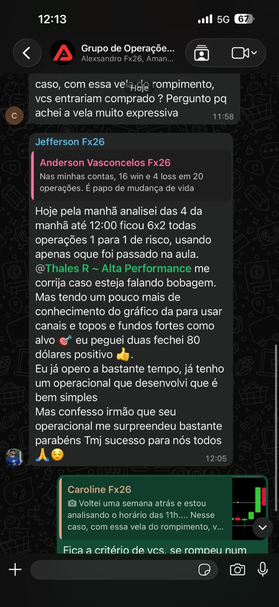

Quebra de estrutura
É a base do meu operacional. Vou te ensinar como eu identifico essas estruturas no gráfico, o que eu espero antes do rompimento e o que precisa acontecer pra eu considerar uma entrada.
Restam apenas 27 vagas. 3 já confirmadas
Forex não é dinheiro fácil e eu não vou tentar te convencer do contrário. Nessa mentoria eu vou te ensinar, ao vivo, o operacional que eu uso todos os dias no mercado, desde a base até a hora de abrir o gráfico e operar junto comigo.
Você não precisa saber prever o mercado.
Precisa saber o que fazer quando ele se movimenta.
Isso te parece familiar?
Você já viu suporte e resistência, já estudou tendência, gerenciamento e provavelmente já assistiu um monte de conteúdo sobre Forex.
Mas quando abre o gráfico sozinho, parece que tudo fica mais difícil.
Uma hora você enxerga compra, daqui a pouco já está pensando em venda.
Toma um stop, muda a análise e começa a procurar outra entrada.
E muitas vezes o que falta não é aprender mais uma estratégia. É saber o que você está procurando no gráfico e ter um processo pra seguir.
É isso que eu quero te ensinar nessa mentoria. Um operacional simples, com regras claras, pra você abrir o gráfico sabendo o que precisa acontecer antes de pensar em uma entrada.
Quero minha vaga na turmaO que você vai aprender
Meu operacional surgiu justamente da vontade de simplificar o que eu fazia no mercado. Com o tempo, fui tirando o que não precisava e ficando com aquilo que realmente fazia sentido pra minha leitura.
É isso que eu vou te ensinar. Quero que você consiga abrir o gráfico, entender o que está acontecendo e saber o que precisa esperar antes de pensar em uma entrada.
É a base do meu operacional. Vou te ensinar como eu identifico essas estruturas no gráfico, o que eu espero antes do rompimento e o que precisa acontecer pra eu considerar uma entrada.
Você não precisa chegar sabendo operar. Vou te ensinar desde a base que você precisa pra entender o meu operacional e, a partir dali, a gente vai evoluindo juntos durante as aulas.
Não quero que você simplesmente decore um monte de regra. Quero que entenda o motivo por trás do que eu faço. E conforme a turma avançar, vamos abrir o mercado juntos pra enxergar isso acontecendo na prática.
Uma das coisas mais importantes que eu aprendi no mercado foi que abrir o gráfico não significa que eu preciso operar. Quero que você saiba o que está esperando e também tenha clareza pra ficar de fora quando aquilo simplesmente não aparecer.
Como funciona
Nada de assistir um monte de aula gravada e depois tentar se virar sozinho. Durante esse mês, a gente vai se encontrar duas vezes por semana, sempre com o mercado aberto e comigo acompanhando vocês.
Sem papo de guru
Se isso faz sentido pra você, a turma começa dia 2 de novembro.
Quero minha vaga na turma
“Eu também já passei muito tempo complicando o mercado mais do que precisava.
Já testei estratégia, indicador, confirmação e um monte de coisa que, no final das contas, só deixava minha tomada de decisão mais difícil.
Com o tempo eu comecei a entender que, pra mim, evoluir no mercado não era adicionar mais coisas no gráfico. Era justamente tirar.
Foi daí que surgiu a forma como eu opero hoje.
Um operacional simples, onde eu sei o que estou procurando, espero aquilo acontecer e, se não acontecer, não tem operação.
É essa forma de enxergar o mercado que eu quero te ensinar durante a mentoria.”
— Thales Ramos
Do básico ao avançado
Nunca operou? Sem problema. Já opera mas se perde em teoria demais? Também tem espaço aqui. A mentoria foi construída pra ensinar de forma direta, sem depender de ficar o dia inteiro preso na tela, analisando gráfico.
O que os alunos falam
Separei algumas mensagens de alunos que já fizeram a mentoria comigo. Prefiro deixar eles te contarem como foi a experiência.




Quer trocar uma ideia comigo antes de decidir?
Me chama no WhatsApp. Eu mesmo vou te responder.
Arraste para o lado para ver mais. Prints reais, tirados do grupo de alunos. Resultados individuais. Rentabilidade passada não garante resultados futuros.
Do dia 02/11 ao dia 01/12, vamos nos encontrar todas as segundas e terças, às 5h30 da manhã.
Durante esse mês, eu vou te ensinar meu operacional, explicar como faço minhas leituras e, conforme a turma for avançando, vamos pro mercado juntos.
Ao clicar, você vai direto pro meu WhatsApp. Eu mesmo vou falar com você e tirar qualquer dúvida antes de confirmar sua vaga.
Ficou com alguma dúvida?
Pode. Você não precisa chegar sabendo operar. Nas primeiras aulas eu vou passar a base que você precisa pra entender meu operacional e conseguir acompanhar o restante da mentoria.
Sim. Inclusive, muita gente chega até mim já sabendo operar, mas ainda sente que complica demais as próprias decisões ou não sabe exatamente o que esperar antes de entrar. Você não precisa abandonar o que já faz. A ideia é conhecer a forma como eu enxergo o mercado e aproveitar aquilo que fizer sentido pra você.
Se conseguir, melhor ainda. Principalmente porque quero que vocês acompanhem o mercado comigo. Mas eu sei que nem todo mundo vai conseguir estar presente em todas as aulas. Por isso, cada aula fica gravada e disponível por 7 dias.
Sim. Cada aula fica disponível por 7 dias depois que acontecer. Dá tempo de assistir caso você tenha perdido ou rever alguma parte que ficou com dúvida.
Sim kkk. No começo eu preciso te ensinar o que eu faço e por que faço. Conforme a turma for avançando, vamos abrir o mercado juntos pra você acompanhar minhas análises e decisões acontecendo em tempo real.
Vai. Durante todo o mês da mentoria você vai ter meu WhatsApp pra tirar dúvidas e falar comigo.
Porque é o horário que eu já estou no mercado. Não escolhi 5h30 só pra fazer vocês acordarem cedo kkk. A ideia é justamente vocês acompanharem minha rotina no horário em que estou analisando o mercado e procurando minhas próprias operações.
É só clicar no botão abaixo e me chamar no WhatsApp. Eu mesmo vou falar com você, tirar qualquer dúvida que ainda tenha e te explicar como confirmar sua vaga. O investimento é de R$ 599,90 via Pix, ou em até 10x de R$ 65,00 no cartão.
Vagas limitadas
Garanta sua vaga na mentoria ao vivo antes que a turma feche.
Falar comigo no WhatsApp